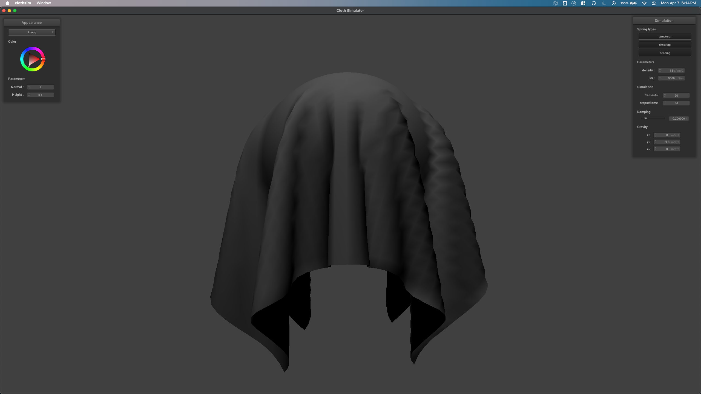
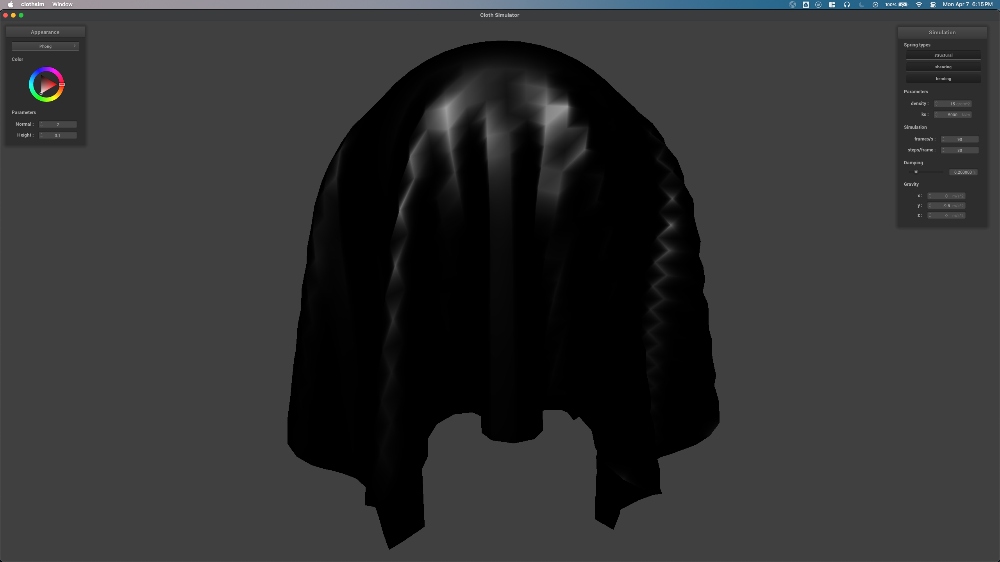

CS184/284A Spring 2025 Homework 4 Write-Up
Link to webpage: https://cal-cs184-student.github.io/hw-webpages-tarnish
Link to GitHub repository: https://github.com/cal-cs184-student/sp25-hw4-simulations

Overview
In this assignment we implemented a cloth simulation from the ground up. We wrote code to initialize the particles (point masses) in a paramterized spatial configuration, create data structures for the springs that hold the cloth together, compute the per-frame Verlet integration in order to update the points’ positions. We also wrote the code to detect collisions between the point masses and other objects in the scene, as well as a spatial hashing algorithm to approximately handle collisions between particles in an efficient manner. Finally we wrote GLSL shader code to perform GPU accelerated lighting calculations in order to give some much needed artistic character to the cloth.
Part 1: Masses and springs
In this part, we implemented a cloth simulation using a mass-spring system. The cloth is represented as a grid of masses connected by springs, where each mass can move freely in 3D space. The springs apply forces to the masses based on their rest lengths, simulating the tension and compression of the cloth.
To initialize the cloth simulation, an evenly spaced grid of point masses must be generated, with dimensions defined by num_width_points and num_height_points, spanning the specified width and height, respectively. The coordinate placement of each point mass depends on the cloth's orientation: if set to HORIZONTAL, all point masses share a constant y value while varying over the xz plane; if VERTICAL, the z coordinate is perturbed with a small random offset between -1/1000 and 1/1000, while positions vary over the xy plane. This randomization can be achieved using a function such as rand(). The top-left point mass is placed at coordinate (0, 0), and the bottom-right at (width, height) within the defined plane.
Additionally, any point mass whose (x, y) index matches an entry in the pinned vector—representing the positions of pinned masses—should have its pinned attribute set to true. It is essential to store all point masses in the point_masses vector using row-major order (iterating along the x-axis first), as this ordering is required for correct rendering behavior.
Cloth wire frame at different point of views/angles.

|

|
Cloth wire with/without/with all shearing constraints

Part 2: Simulation via numerical integration
Exploring Simulations Parameters-Spring Constant ks
Changing ks changes the stiffness of the springs, and this in turn changes the behavior of the cloth surface by making it more or less taught. A low ks makes the cloth flow more easily. Decreasing the ks constant to an extremely low value doesn’t result in extremely strange behavior unlike moving ks in the opposite direction. This is because the maximum stretch distance constraint helps to keep the point masses at most 1.1 times the spring’s resting length apart, so they don’t fall apart completely. Increasing ks past a certain point causes the simulation to blow up, presumably because the spring forces are too great. The highest ks I could go without blowing up within the first second was ks=500,000. Starting at 220,000 the cloth starts to vibrate and oscillate.
If we increase the spring constant to 250,000 then these ripples appear in the fabric. If we increase ks any more it becomes unstable and oscilates.
ks=300,000 (all other params kept default) Note that this configuration is perpetually in motion
Exploring Simulations Parameters-damping
The density affects the weight of each particle, which in turn influences how much the springs can pull the masses. Decreasing the density causes the springs to have a greater effect on the point masses, similar to increasing the spring constant ks, resulting in smoother folds in the cloth. Conversely, increasing the density leads to more numerous and defined folds. However, if the density is increased past a certain point, the cloth begins to smooth out again because the springs can no longer effectively influence the point masses. Lowering the density below 0.35 g/cm2 makes the cloth unstable under default parameters, and reducing it even further causes the simulation to blow up. On the other hand, extremely high densities do not cause a blow up; instead, the high mass simply renders the spring forces less effective.
If we turn the damping down to zero, then the cloth swings back and forth for a while and experiences lots of little ripples in the surface of the fabric.
With a damping of 1% the cloth falls very smoothly and slowly, here is a freeze frame from its initial decent: you can see how the surface is smooth while in motion, unlike the zero damping configuration above which experiences many little perturbations in the surface of the cloth.

Exploring Simulations Parameters-density
Damping essentially changes the drag force that particles experience when moving through the world. A damping value of 0% makes the cloth swing back and forward for a long time (a couple of minutes). Having any positive non-zero damping force causes the system to eventually come to rest. A very high damping force of 1% causes the cloth to fall quite slowly under the influence of gravity.
If we increase the density by 2 orders of magnitude, the number of folds in the cloth increase. Here the only parameter changed from default is density = 1500
And here is a low density of 1: you can see how there becomes no more folds in the fabric (seen in bottom right and left in the reference image below), which makes intuitive sense because if the fabric is lighter then the tension (springs) force of the threads is able to hold itself own weight more easily.

shaded cloth from scene/pinned4.json in its final resting state

Part 3: Handling collisions with other objects
To handle collisions between point masses and spheres we first check if the point mass is intersecting the sphere by taking the vector from the sphere origin to the point mass and if the length of that vector is less than the radius, the point lies inside the sphere. If the intersection is true, then we continue with the collision logic by calculating the point on the sphere’s surface in the direction of the point’s current position (this occurs after verlet integration in the simulation update step so the current position is the newly updated position). We then update the position of the point mass to be its last position plus the correction scaled by the inverse of the friction, where the correction is a vector pointing from the point mass’s last position to the surface point of the sphere calculated above.
The plane collision handling requires a little more linear algebra but follows the same logic. We define collision with a plane to be that the current position of the point is on the other side of the plane with respect to the position of the point in the previous simulation step. This also implies that this logic goes after the verlet integration step in the simulation update function. We do this check by taking the dot product of the plane’s normal with the current and last positions and comparing their signs. If they are the same sign, then no collision occurred this frame. If the signs are different we proceed with the collision adjustment by using the ray-plane intersection equation (treating the last_position as the origin and the vector from last_position to position as the direction) to get the intersection point on the plane. Finally, we update the point mass’s current position the same way as we did in the sphere collision function, that is by adding the correction vector scaled by the friction coefficient to the point mass’s last position.
shaded cloth from scene/sphere.json in its final resting state on the sphere ks = 5000, ks = 500, ks = 50,000
The difference .......
|
|
|
|
|
|

|
|
|
|
|
|
shaded cloth lying peacefully at rest on the plane
Part 4: Handling self-collisions
To handle self collisions of the point masses that make up the cloth, we implemented a simple repulsion model for correcting point masses that are too close in proximity. For the “radius” of point masses, we used 2 * thickness, where thickness is a parameter of the cloth. In order to reduce the time complexity of checking for collisions between point masses (i.e., determining if one is within the radius of another), we used a spatial hash map. The hash function takes a 3D position and returns a floating point number. We employed a common spatial hash function that first converts a floating point 3-vector (representing the 3D position) into an integer 3-vector corresponding to the 3D box that contains the point. This box has dimensions given by w * h * t, where w = 3 * width / num_width_points, h = 3 * height / num_height_points, and t = max(w, h). This 3D box represents the nearby neighborhood for any point mass contained within it. Once the integer vector for the box is obtained, each component is multiplied by a unique large prime number, and the three products are combined using a bitwise XOR, with the result returned as a float. We discovered this algorithm after a quick Google search; for example, this slidedeck hosted on GitHub by Matthias Müller illustrates the concept. Finally, to integrate this into our simulate function, we rebuild the spatial hash map at every time step (since the point masses move through space) and then run the repulsion logic for each point mass. This logic checks for collisions only within its local neighborhood box and applies a correction vector whenever a collision is detected.
document how your cloth falls and folds on itself, starting with an early, initial self-collision and ending with the cloth at a more restful state
Density and ks varies
Reducing the density to a low value, in this case 1 g/cm2, causes the cloth to appear smoother as it self-collides and folds up. Fewer creases form on the cloth surface, and the final resting position is more stable. Here is the cloth as it falls with a density of 1—notice how the folds that form during the fall are smoother than those in the images above:
Here is its final resting state with density of 1, we observe that with a lower density the cloth tends to unfold itself:
When we increase the density, the cloth forms more ripples in the surface and the folds become more chaotic and dimpled:
This checks out with our physical intuition that the point masses are weighing down more so the self collision and spring forces cannot unfold the cloth in the smoother manner seen above. When we drastically decrease the spring force constant, the cloth becomes more chaotic and fluid-like. It takes much longer to reach a stable equilibrium and even then still has oscillations.
For a high ks, the cloth appears to have more laminar-flowing surface, as similar effect to what was achieved by lowering the density, but without the side effect of becoming “floaty” like with low density. The cloth appears to unfold faster here.
Part 5: Shaders
Shader program and how vertex and fragment shaders work together to create lighting and material effects
A shader is a program that runs on a single GPU thread. GPU cores operate in parallel by using data-level parallelism, meaning that the data they operate on does not contain any dependencies across cores. For example, the lighting calculations done for one pixel sample do not depend on the lighting calculations of any other pixels. Since these operations can be done in parallel, GPUs can massively accelerate graphics programs. The vertex shader is the first part of the GPU shader pipeline where geometry data is processed and sent to the fragment shader. The fragment shader then takes geometry data from the vertex shader and performs per-pixel-sample lighting calculations. for example it takes the surface normal vector from the vertex shader and calculates the Phong shading model to color the given fragment. This can be extended in numerous ways, for example, sampling a texture for color, or using the tessellation shader stage to add complexity or animation to the geometry. Different textures can be used for different effects, for example, a certain texture might correspond to the shiny-ness of a material where brighter pixels of the texture are maximally shiny and black pixels are totally diffuse.
Blinn-Phong shading model
The Blinn-Phong is a simple shading technique that takes inspiration from observations of reality. It approximates the light transport as three components: ambient light, diffuse light and specular light. Ambient light is essentially a constant value that ensures that objects are not totally black since total darkness is very rare for us. Diffuse light is modeled using Lambert’s cosine law to vary the intensity of light smoothly over object surfaces based on the angle between the surface normal at each shaded point and the light source. Finally, the specular part is modeled using Lambert’s cosine law, but this time we care about the angle between the normal and the half-vector of the viewing direction and the light source direction. In more human terms, we care about how close the viewing angle is to being the angle of reflection with respect to the light source. Summing all these terms, we get an unlit baseline level of brightness from the ambient component, we get direct lighting shading from the diffuse part, and specular highlights from the specular portion.
Images of Blinn-Phong
|
|

|
|

|
|
texture mapping shader using custom texture
bump mapping on the cloth and on the sphere
|
|
|
|
|
|
|
|
|
|
|
|
From these images, we observed that the displacement mapping shader produces similar results to bump mapping for a low-polygon count mesh. In the fine detail sphere above, you can actually see little concave patches which really add depth to the image. From this small study, I think bump mapping seems more suited for low-polygon-count meshes while displacement mapping creates more interesting results for high-polygon-count meshes. Due to this, the cloth does not look good, in my opinion, with displacement mapping because the mesh is too course, and produces spiky geometry. The bump mapping looks good when applied to the cloth.
The main difference between these two methods is that displacement mapping alters the underlying geometry (at least while the geometry data is in the GPU, these changes do not get saved to disc) while bump mapping only approximates small lighting differences at the micro-facet material scale. Both are interesting techniques and have their own uses, like we mentioned before, we believe bump mapping is more suited to low-poly applications.
Mirror shader on the cloth and on the sphere
|
|
|
|
|

|